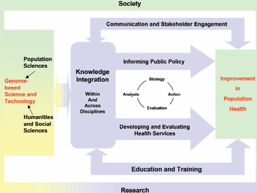

About PHG Research
Mission
To integrate genomics into public health cancer research, policy, and programs.
Vision
To use genomic knowledge to reduce the burden of cancer.
Goals
To improve public health interventions of cancer through these major projects or initiatives:
Definition of Public Health Genomics (PHG)
"A multidisciplinary field concerned with the effective and responsible translation of genome based knowledge and technologies to improve population health" (Bellagio Statement, 2006).
For more information please see:
- The Bellagio Statement
- What is PHG and why should we care?
A presentation from Muin Khoury - The evidence dilemma in genomic medicine

The Need for PHG Research
With the accelerating pace of discoveries of human genetic variation, epigenetic, molecular, biochemical and cellular technologies for cancer care and prevention, there is an urgent need to develop clinical and population-level research, policy and practice processes to translate basic science discoveries into actions that reduce the population burden of cancer in the United States.
The emerging scientific translation needs in the genomics era are substantial. Population sciences are now urgently needed to assess the distribution of genetic variants and their products biomarkers, and interactions with other genes and environmental factors. New methods are needed to assess the contribution of genes and gene-environment interactions (behavior, nutrition, chemicals, and other exposures) to individual and population risks for various cancers. Behavioral and social sciences are needed to assess how genetic information can be used to effect behavior change to reduce the burden of cancer. As importantly, delivery research on clinical utility, effectiveness, and economics of genomics-based health care applications are needed to assess their added value in cancer care and prevention. Genomics and related fields will also affect surveillance, dissemination and diffusion research as well as evaluation of cancer progression and survivorship. Without the expansion of population sciences in genomics, the promise of genome research and discoveries may not reach its full potential.
Current NCI Genomics Translational Research
An exhaustive search of the FY2007 NCI grant portfolio resulted in 19 funded genomics applications that were considered "translational".
Public Health Genomics Interest Group (PHGIG)
A trans-NIH Public Health Genomics Interest Group has been created. This group will lead NIH regarding scientific input on PHG training, workshops, and initiatives.
Sign up for the PHGIG listserv – (NIH only)
Papers of Interest
Translation Research in Cancer Genetics: The Road Less TraveledWill genomics widen or help heal the schism between medicine and public health?
Contacts
Sheri Dixon Schully, PhD
Public Health Genomics Coordinator, Division of Cancer Control and Population Sciences, NCI
schullys@mail.nih.gov
Muin J. Khoury MD, PhD
Director, National Office of Public Health Genomics, CDC
Public Health Genomics Liaison, Division of Cancer Control and Population Sciences, NCI
mkhoury@cdc.gov